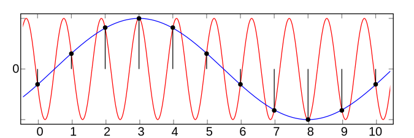

9 Transformata Fouriera
Analiza Fourierowska to narzędzie matematyczne służące do rozkładu dowolnej funkcji okresowej na sumę funkcji trygonometrycznych o różnych częstotliwościach. To znaczy, że możemy reprezentować funkcję jako sumę sinusów i cosinusów o różnych amplitudach i częstotliwościach. Analiza Fourierowska jest szeroko stosowana w dziedzinach, takich jak przetwarzanie sygnałów, grafika komputerowa, akustyka, obróbka obrazów, kryptografia i wiele innych. Możliwość rozkładu funkcji na funkcje trygonometryczne pozwala na wiele praktycznych zastosowań, takich jak przetwarzanie i analiza sygnałów, filtracja szumów i rozpoznawanie wzorców w danych.
Analiza Fourierowska ma wiele zastosowań w dziedzinie analizy obrazów. W zasadzie wszystkie obrazy cyfrowe można traktować jako funkcje dwuwymiarowe, gdzie wartość funkcji reprezentuje jasność piksela w danym miejscu na obrazie.
Jednym ze sposobów zastosowania analizy Fourierowskiej w analizie obrazu jest transformata Fouriera 2D, która pozwala na rozkładanie obrazów na zestaw sinusów i cosinusów o różnych częstotliwościach. W ten sposób możemy zobaczyć, jakie częstotliwości dominują w obrazie i jakie wzorce występują.
Transformata Fouriera 2D pozwala również na filtrację obrazów, poprzez usunięcie pewnych zakresów częstotliwości. Na przykład, można usunąć wysokie częstotliwości, co prowadzi do zmiękczenia krawędzi obiektów i wygładzenia obrazu. Z drugiej strony, można usunąć niskie częstotliwości, co prowadzi do usunięcia szumu i poprawy jakości obrazu.
Analiza Fourierowska może być również stosowana w celu rozpoznawania wzorców w obrazach. Po rozkładzie obrazu na funkcje trygonometryczne można wykryć wzorce poprzez analizę wartości amplitud i faz poszczególnych częstotliwości.
Wszystkie te zastosowania analizy Fourierowskiej pozwalają na lepsze zrozumienie i analizę obrazów cyfrowych oraz ich poprawę i ulepszanie.
Ponieważ transformatę Fouriera będziemy stosować do obrazów cyfrowych, to zajmiemy się jej dyskretną odmianą (ang. Discrete Fourier Transform - DFT). Formalna definicja dyskretnej transformaty Fouriera dla obrazu 2D \(g(u,v)\) o wymiarach \(M\times N\) jest następująca
\[ \begin{align} G(m,n) =& \frac{1}{\sqrt{MN}}\sum_{u=0}^{M-1}\sum_{v=o}^{N-1}g(u,v)e^{-i2\pi\tfrac{mu}{M}}e^{-i2\pi\tfrac{nv}{N}}\\ =& \frac{1}{\sqrt{MN}}\sum_{u=0}^{M-1}\sum_{v=o}^{N-1}g(u,v)e^{-i2\pi\left(\tfrac{mu}{M}+\tfrac{nv}{N}\right)} \end{align} \tag{9.1}\] dla współrzędnych spektralnych \(m = 0,\dots,M-1\) i \(n = 0,\dots,N-1\). Jak widzimy, otrzymana transformata Fouriera jest ponownie funkcją 2D o tym samym rozmiarze (\(M \times N\)) co oryginalny obraz (sygnał). Podobnie, odwrotna dyskretna transformata Fouriera jest zdefiniowana jako
\[ \begin{align} g(u,v) =& \frac{1}{\sqrt{MN}}\sum_{m=0}^{M-1}\sum_{n=o}^{N-1}G(m,n)e^{i2\pi\tfrac{mu}{M}}e^{i2\pi\tfrac{nv}{N}}\\ =& \frac{1}{\sqrt{MN}}\sum_{m=0}^{M-1}\sum_{n=o}^{N-1}G(m,n)e^{i2\pi\left(\tfrac{mu}{M}+\tfrac{nv}{N}\right)} \end{align} \tag{9.2}\]
dla współrzędnych obrazu \(u = 0,\dots,M-1\) i \(v = 0,\dots,N-1\).
Z powyższych definicji wynika, że transformata Fouriera 2D jest złożeniem dwóch transformat Fouriera 1D po poszczególnych koordynatach.
Niestety, nie istnieje prosta metoda wizualizacji dwuwymiarowych funkcji o wartościach z ciała liczb zespolonych, takich jak wynik 2D DFT. Jedną z alternatyw jest wyświetlanie części rzeczywistej i urojonej osobno jako powierzchni 2D. W większości przypadków jednak przedstawiana jest wartość bezwzględna funkcji zespolonych, którą w przypadku transformaty Fouriera jest \(|G(m, n)|\), widmo mocy (ang. power spectrum).
Dla większości naturalnych obrazów “energia spektralna” koncentruje się na niższych częstotliwościach z wyraźnym maksimum w centrum układu współrzędnych. Wartości widma mocy obejmują zwykle szeroki zakres, a wyświetlanie ich liniowo często sprawia, że mniejsze wartości są niewidoczne. Aby pokazać pełny zakres wartości widma, w szczególności mniejsze wartości dla wysokich częstotliwości, często wyświetla się pierwiastek kwadratowy \(\sqrt{|G(m,n)|}\) lub logarytm \(\log|G((m,n)|\) odpowiednio.
Ponieważ, zarówno DFT, jak i spektrum mocy są symetryczne względem środka układu współrzędnych, to przedstawia się je często w reprezentacji scentrowanej.

Na rysunku widać jak się różni reprezentacją widmową (spektralną) ten sam obraz kiedy go wyrazimy widmem bez centralizacji i z centralizacją.

Najwyższe dopuszczalne częstotliwości sygnału w dowolnym kierunku leżą wzdłuż granicy wyśrodkowanego widma 2D o rozmiarach M × N. Każdy sygnał, którego wszystkie składowe częstotliwościowe znajdują się w tym regionie, spełnia twierdzenie o próbkowaniu (reguła Nyquista), a więc może być zrekonstruowany bez aliasingu1. W przeciwieństwie do tego, każda składowa widmowa znajdująca się poza tymi granicami jest odbijana przez granicę tego pola w kierunku centrum współrzędnych na niższe częstotliwości, co objawia się jako wizualny aliasing w zrekonstruowanym obrazie.
1 reguła Nyquista dotyczy próbkowania częstotliwości, tak aby nie wystąpił aliasing, czyli sytuacja w której obraz jest zniekształcony, ponieważ wystąpiła niejednoznaczna reprezentacja falowa tego samego sygnału

Najwyraźniej najniższa efektywna częstotliwość próbkowania występuje w kierunkach osi współrzędnych siatki próbkującej. Aby zapewnić, że określony wzór obrazu może być zrekonstruowany bez aliasingu przy dowolnej orientacji, efektywna częstotliwość sygnału \(\hat{f}\) tego wzoru musi być ograniczona do \(\frac{1}{2\tau}\) w każdym kierunku, ponownie zakładając, że częstotliwość próbkowania \(\tau\) jest taka sama dla obu współrzędnych.
Orientacja przestrzenna fal kosinusowych i sinusowych 2D o współrzędnych spektralnych \(m,n\) jest dana wzorem
\[ \psi(m,n)=\operatorname{ArcTan}(m/M,n/N)=\operatorname{ArcTan}(mN,nM), \tag{9.3}\]
gdzie \(\psi(m,n)\) dla \(m=n=0\) jest niezdefiniowana. Natomiast sinusoida 2D o częstotliwości skutecznej \(\hat{f}\) i orientacji spektralnej \(\psi\) jest reprezentowana przez współrzędne spektralne
\[ (m,n)=\pm\hat{f}\cdot(M\cos\psi, N\sin\psi). \tag{9.4}\]
Z Równanie 9.4 możemy wywnioskować, że w szczególnym przypadku sinusoidy o orientacji przestrzennej \(\psi=45\degree\) odpowiednie współczynniki widmowe znajdują się we współrzędnych częstotliwościowych
\[ (m,n)=\pm(\lambda M, \lambda N), \quad-1/2\leq\lambda\leq 1/2, \tag{9.5}\]
czyli na przekątnych widma. O ile obraz (a więc i widmo) jest kwadratowy (\(M = N\)), to kąty orientacji w obrazie i w widmie nie są takie same, choć pokrywają się wzdłuż kierunków osi współrzędnych. Oznacza to, że obrót obrazu o jakiś kąt \(\alpha\) powoduje obrót widma w tym samym kierunku, ale na ogół nie o ten sam kąt \(\alpha\). Aby uzyskać identyczne orientacje i kąty zwrotu zarówno w obrazie, jak i w widmie, wystarczy przeskalować widmo do rozmiaru kwadratu, tak aby rozdzielczość spektralna była taka sama wzdłuż obu osi częstotliwości.

9.1 Przykłady zastosowań DFT
Poniższe przykłady demonstrują pewne podstawowe właściwości DFT na rzeczywistych obrazach. Wszystkie przykłady na Rysunek 9.5 - Rysunek 9.10 pokazują wyśrodkowane i skwantowane widmo z logarytmicznymi wartościami natężenia.
9.1.1 Skalowanie
Na Rysunek 9.5 widać, że skalowanie obrazu w przestrzeni sygnału ma odwrotny efekt w przestrzeni częstotliwości

9.1.2 Powtarzane wzorce
Obrazy na Rysunek 9.6 zawierają powtarzające się wzory periodyczne w różnych orientacjach i skalach. Pojawiają się one jako wyraźne piki w odpowiednich miejscach w widmie.

9.1.3 Rotacje
Rysunek 9.7 pokazuje, że obrót obrazu o pewien kąt \(\alpha\) powoduje obrót widma w tym samym kierunku i - jeśli obraz jest kwadratowy - o ten sam kąt.

9.1.4 Struktury zorientowane, wydłużone
Obrazy przedmiotów pochodzenia ludzkiego często wykazują regularne wzory lub wydłużone struktury, które pojawiają się dominująco w widmie. Obrazy na Rysunek 9.7 pokazują kilka wydłużonych struktur, które pojawiają się w widmie jako jasne smugi zorientowane prostopadle do głównego kierunku wzorów obrazu.

9.1.5 Obrazy naturalne
Proste i regularne struktury są zwykle mniej dominujące w obrazach naturalnych obiektów i scen, a zatem efekty wizualne w widmie nie są tak oczywiste jak w przypadku obiektów sztucznych. Kilka przykładów tej klasy obrazów pokazano na Rysunek 9.8 i Rysunek 9.9.


9.1.6 Wzorce druku
Regularne wzory generowane przez powszechnie stosowane techniki druku rastrowego (Rysunek 9.10) są typowymi przykładami periodycznych struktur wielokierunkowych, które wyraźnie wyróżniają się w odpowiednim widmie Fouriera.

9.2 Zastosowania DFT
DFT można stosować na wiele sposobów w zagadnieniach z zakresu analizy obrazu. Nie mniej jednak najczęściej można spotkać połączenie DFT i filtrów liniowych. Polega to na zastosowaniu transformaty Fouriera do oryginalnego obrazu, a następnie nałożenie filtrów na widmo powstałe z DFT. Ostatecznie na przekształcony obraz (po DFT i filtrach) nakłada się odwrotną transformatę Fouriera.
Filtrowanie w dziedzinie częstotliwości otwiera jeszcze jedną ciekawą perspektywę: odwrócenie efektów działania filtra, przynajmniej w ograniczonych warunkach.
Załóżmy, że mamy obraz \(g_{blur}\), który został wygenerowany z oryginalnego obrazu \(g_{orig}\) przez pewien filtr liniowy, na przykład rozmycie ruchu wywołane przez poruszającą się kamerę. Przy założeniu, że ta modyfikacja obrazu może być wystarczająco zamodelowana przez funkcję filtru liniowego \(h_{blur}\) możemy stwierdzić, że
\[ g_{blur}(u,v)=(g_{orig}*h_{blur})(u,v). \tag{9.6}\]
Przypomnijmy, że w przestrzeni częstotliwości odpowiada to mnożeniu odpowiednich widm, czyli
\[ G_{blur}(m,n)=G_{orig}(m,n)\cdot H_{blur}(m,n) \] więc powinno być możliwe odtworzenie oryginalnego (nie zamazanego) obrazu poprzez obliczenie odwrotnej transformaty Fouriera wyrażenia
\[ G_{orig}(m,n)=\frac{G_{blur}(m,n)}{H_{blur}(m,n)}. \] Niestety “odwrotny filtr” działa tylko wtedy, gdy współczynniki spektralne \(H_{blur}\) są niezerowe, ponieważ w przeciwnym razie wartości wynikowe są nieskończone. Jednak nawet małe wartości \(H_{blur}\), które są typowe dla wysokich częstotliwości, prowadzą do dużych współczynników w zrekonstruowanym widmie i w konsekwencji do dużych ilości szumów obrazu. Ważne jest również dokładne przybliżenie rzeczywistej funkcji filtru, gdyż w przeciwnym razie zrekonstruowany obraz może silnie odbiegać od oryginału. Przykład na rysunku Rysunek 9.11 przedstawia obraz rozmyty przez płynny ruch poziomy, którego efekt można łatwo zamodelować jako liniową konwolucję. Jeśli funkcja filtrująca, która spowodowała rozmycie, jest dokładnie znana, to rekonstrukcja oryginalnego obrazu może być wykonana bez problemów (Rysunek 9.11 (b)). Jednak, jak widać na Rysunek 9.11 (c), duże błędy pojawiają się, jeśli filtr odwrotny tylko nieznacznie odbiega od filtra rzeczywistego, co szybko czyni metodę bezużyteczną.

Istnieje kilka transformacji spektralnych, które mają właściwości podobne do DFT, ale nie działają na dziedzinie zespolonej. Dyskretna transformata kosinusowa (DCT) jest dobrze znanym przykładem, który jest szczególnie interesujący w naszym kontekście, ponieważ jest często używany do kompresji obrazów i wideo. DCT wykorzystuje jako funkcje bazowe wyłącznie funkcje kosinus różnych częstotliwości i operuje na sygnałach i współczynnikach spektralnych o wartościach rzeczywistych. Podobnie istnieje również dyskretna transformata sinusoidalna (DST) oparta na układzie funkcji sinusoidalnych.